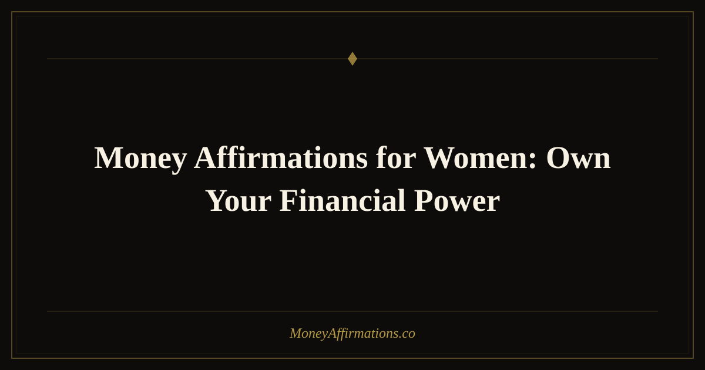

Money Affirmations for Women: Own Your Financial Power

Women's relationship with money is shaped by more than personal habits — it is layered with generational messaging, workplace dynamics, and cultural scripts that have long tied femininity to modesty and money to discomfort. Research consistently shows that women are more likely to undercharge, more likely to experience financial anxiety, and less likely to negotiate salary increases than their male peers — not because of capability gaps, but because of deeply conditioned beliefs about what women are "supposed" to want and ask for. Money affirmations for women are a targeted antidote to those specific patterns. They do not simply say "think positive." They address the real blocks: the guilt that comes with accumulating wealth, the fear of being seen as greedy, the impulse to make oneself financially small to avoid conflict, and the inherited belief that financial dependence is safer than financial power.
What are money affirmations for women?
Money affirmations for women are present-tense, first-person statements designed to replace the specific limiting beliefs that disproportionately affect women's financial lives. They address issues like pay gap internalization — the unconscious acceptance that lower pay is somehow appropriate — wealth guilt, and the cultural conditioning that frames ambitious earning as unfeminine or selfish. Unlike generic money affirmations, these statements are written with awareness of how women are socialized around money: to be caretakers rather than accumulators, to share rather than keep, to shrink rather than expand. The goal is to build a new internal narrative — one where financial independence feels safe, natural, and deeply aligned with who you are.
25 money affirmations for women
- I am fully capable of building, managing, and growing serious wealth.
- My financial independence protects me and empowers everyone I love.
- I negotiate my salary with confidence because I know my market value and I ask for it.
- Wanting financial abundance does not make me greedy — it makes me powerful.
- I release the belief that women who earn a lot are threatening or selfish.
- I am comfortable taking up space in rooms where money and power are discussed.
- I invest in my financial education because understanding money is a form of self-respect.
- I am building generational wealth that will benefit my family for decades to come.
- I charge what I am worth without guilt, apology, or second-guessing.
- Money flows to me easily because I create real value in the world.
- I speak about money openly and without shame — it is a tool, not a taboo.
- I own my financial decisions and take full responsibility for my economic future.
- I am allowed to earn more than the women before me — and I celebrate that progress.
- My wealth does not diminish anyone else's; it adds to the abundance available to all.
- I save, invest, and protect my money with the same care I give to people I love.
- I have a healthy, confident relationship with my bank account and my net worth.
- I recognize and walk away from financial situations that do not honor my worth.
- I am not defined by financial mistakes of the past — I grow and I move forward.
- I attract opportunities that reward my talent, experience, and ambition fully.
- Having financial security means I give from a place of fullness, not fear.
- I trust myself to make smart, informed decisions with every dollar I earn.
- I am breaking money patterns that no longer serve me or the women who come after me.
- Wealth and femininity are not opposites — I embody both with ease and pride.
- I deserve a seat at the table where financial opportunities are created.
- I am a woman who earns well, keeps well, and lives abundantly — starting now.
How to use these affirmations
For these affirmations to shift deeply held beliefs, they need to be practiced in emotionally activated moments — not just as a morning routine. Before any salary negotiation or rate-setting conversation, choose three to five affirmations from this list and read them aloud with your shoulders back and your voice steady. The physical posture matters: research on embodied cognition shows that open, expansive posture amplifies the effect of confidence-based statements. Write your chosen affirmations in a dedicated journal and add a sentence underneath each one about a time in your life when it was already true. This bridges the gap between the new belief and lived experience. If you encounter the specific block around wealth guilt — the feeling that accumulating money is somehow wrong or unsafe — focus especially on affirmations 4, 14, and 20. Those three address the root of that pattern directly and are worth repeating daily for at least thirty days.
Tips to make them work faster
- Find a money mentor or model. Identify a woman — real or in your industry — whose financial life you admire. When doubt creeps in, ask yourself what she would believe and choose that affirmation.
- Pair affirmations with action. Open the investment account. Send the revised rate. Ask for the raise. Affirmations accelerate when they are linked to real-world proof that the belief is operational.
- Do a money audit with curiosity, not judgment. Review your income, spending, and savings monthly. Entering these numbers without shame is itself a powerful act that reinforces the affirmations about financial confidence and competence.
- Notice the old story when it surfaces. When you catch yourself shrinking — accepting less than you asked for, apologizing for your price — name it: "That is the old pattern." Then choose an affirmation as a conscious replacement thought.
- Practice community affirmation. Share a few of these with a trusted friend and say them to each other. Witnessing someone else speak financial power out loud amplifies your own belief in it.
Frequently Asked Questions
Why do women need different money affirmations than men?
Not all women share the same financial blocks, and not all men are free of them. But statistically and culturally, women carry specific conditioning around wealth — including guilt about earning more than partners, fear of being perceived as aggressive when negotiating, and a tendency to attribute financial success to luck rather than skill. Affirmations written to address those specific patterns work more precisely than generic ones.
Can affirmations help with closing the gender pay gap?
Affirmations address the internal side of the equation — the self-doubt that causes women to accept lower offers without negotiating, to undersell in interviews, or to avoid advocating for raises. Structural change is also essential, but shifting your internal narrative makes you more likely to take the concrete actions — negotiating, asking, applying for stretch roles — that directly affect your own pay outcomes.
What if wealth feels unsafe or unfamiliar?
That feeling is common, especially for women from backgrounds where money was scarce or associated with conflict. Start with affirmations around safety and trust — specifically numbers 15, 21, and 20 from the list above — before scaling up to the bigger abundance statements. Building a foundation of financial safety in the body is as important as building it in the bank account.
These affirmations are one piece of a larger shift. For more statements and context around building a healthy, abundant money mindset, visit the full money affirmations collection — the foundation for everything you are building here.